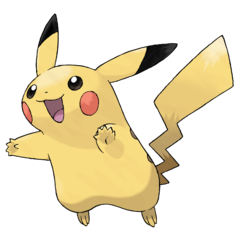

Featured Pokémon

Pikachu
Pikachu, the Mouse Pokémon. An Electric type. Pikachu have pouches on their cheeks that can store electricity,
which they release if threatened. Male and female Pikachu have differently shaped tails.

Eevee
Eevee, the Evolution Pokémon. Eevee is rarely seen, and can adapt to severe habitats by evolving, changing its capabilities and form..
Learn More